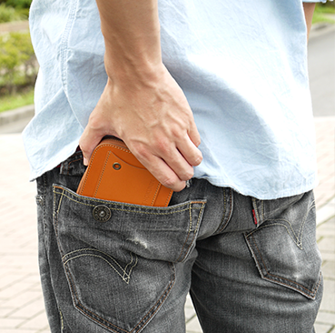

|
輕鬆感應悠遊卡/一卡通...♪ 大小適中，可整個放入口袋的日式簡約設計使用越久越有自己味道的多功能零錢包 古銅色拉鏈＋粗縫線×硬質皮革，就是有型！ |
LIBERTY 零錢包 |
|  | |
|
❶ IC感應卡專用口袋，方便通行捷運票口 ❷ 精細設計的內口袋，零錢不掉落！ ❸ 紙鈔、卡片及零錢收納通通大丈夫(だい じょうぶ) ❹ 越用越順手的日本職人手作皮革錢包 ❺ 自動防止誤開的拉鍊 ❻ 充滿皮革質感的斷面處理 ❼ 日式簡約設計，超群的收納力 |

|
|
| ❶IC感應卡專用口袋，方便通行捷運票口 | ❷精細設計的內口袋，零錢不掉落！ |
|
可放入悠遊卡、一卡通或門禁卡等IC感應卡的專用口袋。 不論是通行自動感應票口，或是用來支付小額消費都很便利。 (※無防止誤刷功能) |
內有零錢專用口袋。 開口和拉鍊之間尚有一段距離，零錢絕不會輕易掉落。 |

|
|
|
❸日式簡約設計，紙鈔、卡片及零錢收納 通通大丈夫(だいじょうぶ) |
❹越用越順手的日本職人手作皮革錢包 |
|
零錢口袋兩側可放卡片及對折的鈔票...等等，功能十分全面。 雖然是零錢包，功能卻很完善。 |
硬質皮革會隨著使用時間變化，形成更貼適您個人使用習慣的樣貌。 |

|
|
| ❺自動防止誤開的拉鍊 | ❻充滿皮革質感的斷面處理 |
| YKK自動上鎖拉鍊使用。開合錢包必須拉起拉片，手一離開拉片就會自動上鎖，是一款使用上令人安心的設計。 |
皮革斷面不上亮光漆，僅用消光塗料打磨。 可充分感受皮革的厚實感。 |
| ❼日式簡約設計，超群的收納力 | |
|
可收納4張紙鈔，19枚硬幣及10張卡片。錢包高度為9.8cm，放入紙鈔也不會卡到拉鍊。 ＊收納狀態請參考圖[4] |
|
|
LIBERTY 零錢包 保留自然質地+有份量的硬度 高貴皮革(ディグニティ レザー) 表面無壓紋，保留了牛皮最自然的質地。 使用較厚的皮革製作，而造就本單品具有份量且質感上十分硬實。 充分體現皮革本身的優點，一手在握盡收眼底。 (同系列皮革 >> BRAVERY鑰匙包) |

|
||||||||||
|
[提醒您] |
||||||||||

|
DT0410CA 焦糖色 |
DT0410BR 棕色 |
DT0410DNV 海軍藍 |
|
DT0410BK 黑色 |